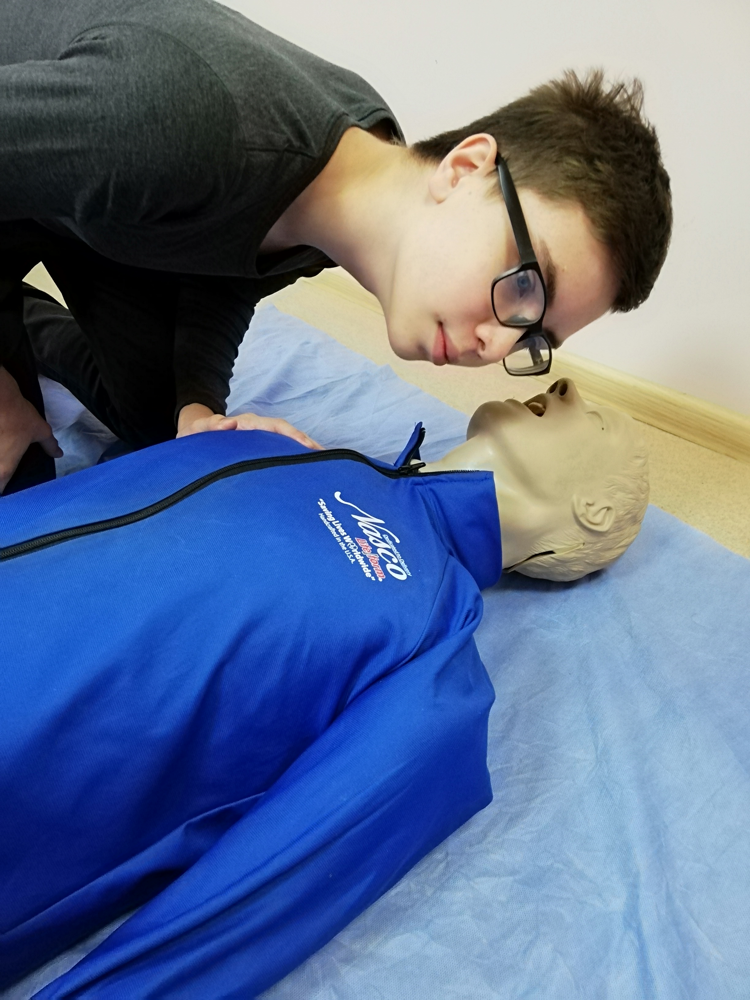
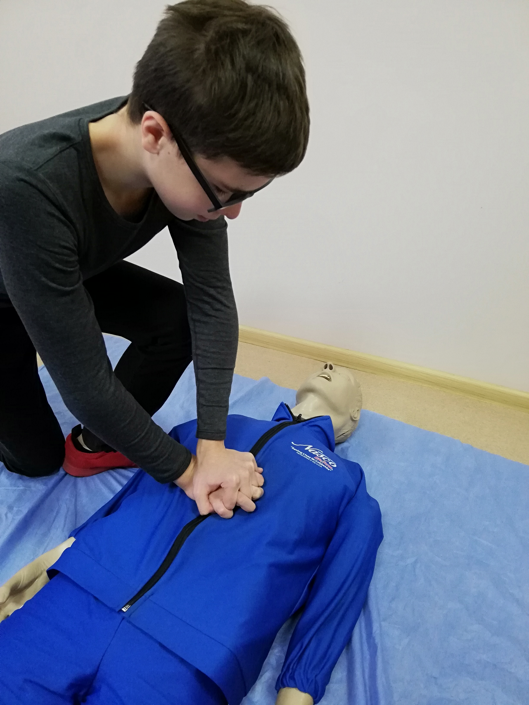

Перевірьте наявність реакції
Обережно потрясіть постраждалого за плече та голосно зверніться до нього: "З вами
все гаразд?".
Якщо постраждалий не реагує, поверніть його на спину.
Перевірте наявність дихання
Протягом не більше ніж 10 секунд визначте наявність дихання за
допомогою прийому "чую, бачу, відчуваю".
Поодинокі (менше 2 за 10 секунд), повільні та
гучні подихи у
постраждалого не є нормальними.

Викличте швидку медичну допомогу!

Визначте місце для компресій
Покладіть два пальці на нижній край грудини і розташуйте основу долоні трохи вище
цього місця. Таким чином ви
будете робити натискання в центрі грудної клітини.
Тримайте руки "замком", як показано на
фото нижче.
Почніть непрямий масаж серця
Натискайте на грудну клітку на глибину 5-6 см зі швидкістю 100-120 компресій на хвилину. Руки тримайте прямими та давайте грудній клітці випрямитися після кожного стиснення. Щоб тримати правильний ритм, про себе повторюйте пісню Stayin` Alive або Baby Shark.
Штучне дихання
На кожні 30 натискань потрібно робити 2 вдихи.
Якщо у вас є відповідна
підготовка, закиньте голову постраждалого назад
та затисніть пальцями ніс. Зробіть нормальний вдих і рівномірно вдувайте повітря, спостерігаючи
за підйомом грудної клітки. Користуйтесь засобами
індивідуального захисту.
Не переривайте непрямий масаж серця більше ніж на 10
секунд!
Що робити далі
Далі чергуйте непрямий масаж серця та штучне дихання, поки не приїде швидка, поки
постраждалий не почне стабільно дихати або
поки ви не втомитеся.
Якщо ви не маєте можливості проводити штучне дихання, виконуйте СЛР
за принципом "тільки компресії" (безперервні натискання в темпі
100-120 раз на хвилину).
Алгоритм створений на основі рекомендаціїй Європейської Ради Реанімації. Завантажити повну версію